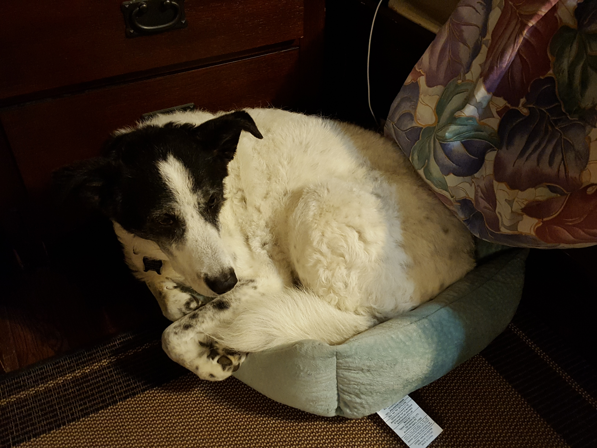
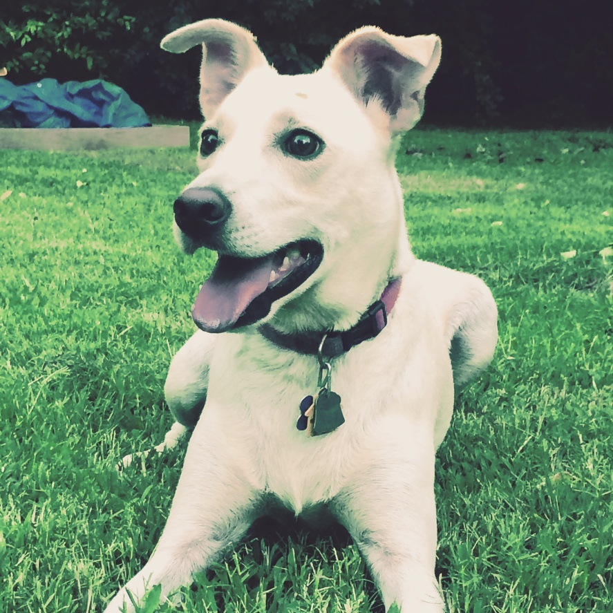
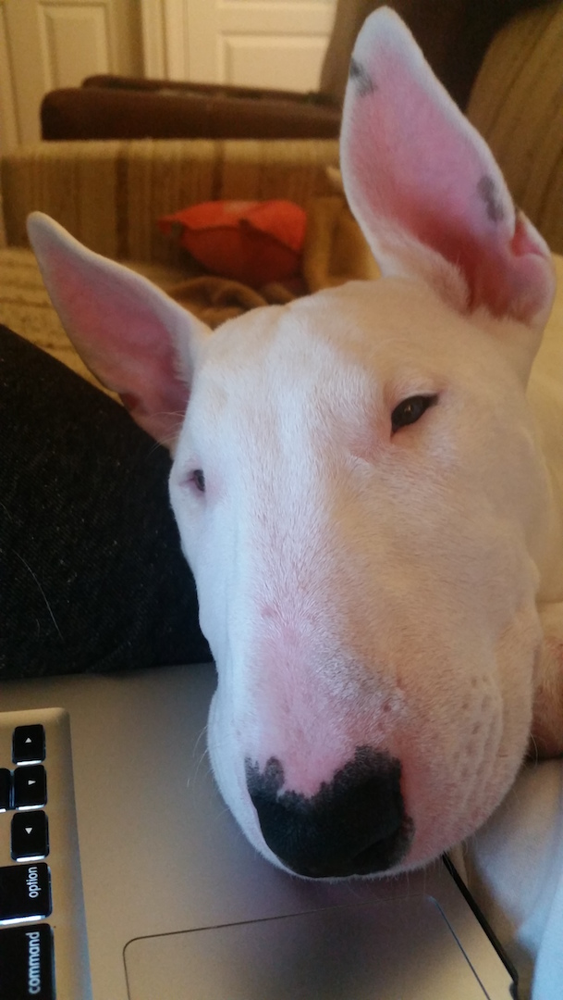
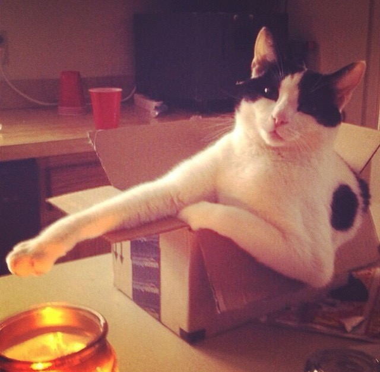

Employee of the Month
Professor Fluffington
Who would've thought this would happen? Well, as you might have guessed the real brains behind this operation is none other than the king kitty himself, Proffessor Fluffington. A highly decorated service kitty to not only dogs but to the humans attached to their canine counterparts. His stance on animal behavior is as sharp and tough as the nails in his paws, which he has been known to show once other students become unruly. Don't let the whiskers fool you, this kitty is always ready to work and even shows up with a dead bird or field mouse as a trophy.

Cuddletin
- Graduated from Kibble University, with highest honors
- Enjoys long games of fetch and belly scratches
- Level 25 cuddler
- Brains over brawn

Dr. Benny-Blanco
- Graduated from Whisker University, captain of dog paddling team
- Started the bark vs bite debate club
- Believes in past life he was a Great Dane
- Enjoys long walks on the beach

Boomhauer
- Learned everything he knows from the streets
- Secret kitty lover of cats
- Favorite chew toy: shoes
- Always down for car rides

Mean-Mark
- Graduated from Harvard, astonishngly
- Decorated war vet
- Ponders the meaning of life, in spare time
- Smartest feline on staff, next to Professor Fluffington